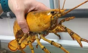

Trending Articles
Decisive Victory for the Joy Coalition at the Battle of Blibbles Field

Finally ending after 4 days of battle, the Joy Coalition, composed of the forces of Glaggleland, Glooberland, Gemboland, and what remains of Gazoland, achived victory over Enphoso and his forces. With around 800,000 troops in the coalition and an estimated 1.1 million Enphosians, it was a miracle from the Peripheral Glag himself that the Enphosian forces were able to be defeated. After the destruction of Gazoland, which started the battle, Glaggles everywhere can feel safe, with Enphoso himself being sighted retreating to the Enphosian Pyramidian, along with his forces. Look out for a time of peace, coming to everywhere near you!
Battle of Blibbles Field TimelineBrand New Sighting of the Peripheral Glag over Glaggleland!

The Peripheral Glag is an elusive figure, and any sighting of him is a truly joyous occasion! After the Glaggleland Massacre, sightings of His Joyousness have become increasingly rare, and seeing His Joyousness again after the Battle of Blibbles Field is a great sign! Citizens of Glaggleland reported hearing a joyous giggle eminating from the sky, and thus, The Peripheral Glag appeared! Many Gigglers rejoiced seeing him, and even captured his appearance for the Fugorg Post! May The Peripheral Glag look over everyone in the years to come!
More information on past Peripheral GlagRecent Studies Show a Shocking Decrease in Globster Population in the Glasear Aquatic Region
The Glasear Aquatic Region, the second largest area of water on Glagworld, is facing a crisis! Globsters, one of the most common sea creatures in the Glasear Aquatic Region, are steadily going extinct! Too much eating and killing of these wonderful creatures can lead to their tota extinction by 2065! Many countries have already started placing limits on catching Globsters, including Glooberland, Gemboland, Glaggleland, and Gleeberland. Look out for a decrease in Globster-related meals, and hopefully an increase in Globster numbers in the wild!
More information on the Globster and other Glasear Aquatic Region sealifeSoggle Depressive Plague Hits Soggleland, 1250 Soggles Dead
Soggles are one of the many races of Glaggles, yet they are facing devastation. Soggles were already a very small race, with only about 7,500 Soggles in Glagword, yet that number is now reporteed to be around 6,000. Leading scientists are calling this occurence as the Soggle Depressive Plague, which started after the Glaggleland Massacre. While this tragic event affected almost every race of Gaggles, the Soggles were especially sensitive to this topic, and just bringing the event can cause death in them. Make sure to look out for your Soggle friends out there.
More information on the Soggle Race